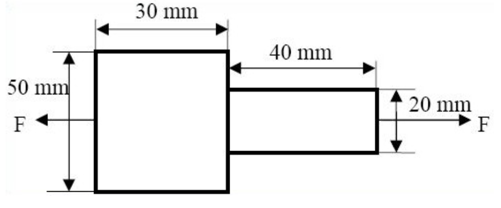
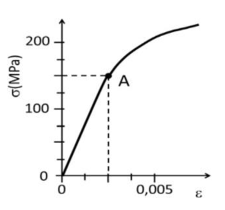

1.
Un redondo de 50 cm de longitud está fabricado con un acero de límite elástico 250 MPa y de módulo de elasticidad 21·10⁴ MPa. Se pide:
Si se sometiera a una carga de 12500 N, ¿cuál debería ser su diámetro mínimo, para que la barra no se alargara más de 0,50 mm?
Si la carga fuera de 25000 N y el diámetro de la barra 10 mm, justificar si se produciría deformación plástica.
En régimen elástico, . Por tanto, mm² y mm. Para mm y 25 000 N, MPa, valor superior al límite elástico de 250 MPa; se produciría deformación plástica.
1. a) mm; b) MPa > 250 MPa: hay deformación plástica.
2.

Una pieza de acero como la de la figura, de sección circular, se somete a una fuerza F. El acero tiene una resistencia a tracción de 630 MPa y un módulo elástico de 210 GPa y se desea un coeficiente de seguridad de 4. Determinar:
El valor máximo de la fuerza a aplicar.
El alargamiento total producido con esa fuerza.
La sección crítica es la de 20 mm: mm². Como la fuente solo aporta resistencia a tracción, el cociente MPa es aquí una tensión de seguridad frente a rotura, no la tensión admisible PAU basada en el límite elástico. Así, kN. Suponiendo respuesta elástica, mm.
2. a) kN (seguridad frente a rotura); b) mm, suponiendo régimen elástico.
3.
Un acero tiene un módulo elástico de 200 GPa y un límite elástico de 360 MPa. Una varilla de este material, de 12 mm² de sección y 80 cm de longitud, se somete a una carga vertical de 1800 N. Razonar:
¿Recuperará la varilla su longitud inicial?
¿Qué diámetro mínimo debería tener una barra de dicho material para que, sometida a una carga de 50 kN, no experimente deformación permanente?
MPa, menor que 360 MPa; al retirar la carga recupera su longitud. Para 50 kN, mm² y mm.
3. a) Sí, MPa < 360 MPa; b) mm.
4.
Una barra de 30 mm de diámetro tiene las siguientes características: módulo de elasticidad E = 700 MPa, resistencia a tracción 20 MPa y límite elástico 10 MPa. Calcular:
La tensión unitaria a la que está sometida la barra cuando se aplica una fuerza de tracción de 1500 N. Si esa carga dejara de actuar, razonar si la barra recupera su longitud inicial.
La longitud inicial de la barra para que el alargamiento producido por la carga de 1500 N sea de 1,25 mm.
y MPa. Como es menor que 10 MPa, la barra trabaja en la zona elástica y recupera su longitud. De , resulta mm.
4. a) MPa y recuperación elástica; b) mm.
5.
Una barra cilíndrica de 80mm de longitud y 8 mm² de sección está sometida a una fuerza de tracción de 4 kN. Sabiendo que el módulo de elasticidad del material es 4·10⁴ MPa y que el límite elástico es 250 MPa:
Calcular el alargamiento unitario en el límite elástico.
Justificar si la barra recuperará la longitud primitiva al retirar la carga de 4 kN. En caso negativo, ¿qué diámetro mínimo habrá́ de tener la barra para que la deformación no sea permanente?
En el límite elástico, (0,625 %). Con 4 kN y 8 mm², MPa > 250 MPa, por lo que no recupera por completo. Para evitarlo, mm² y mm.
5. a) (0,625 %); b) no recupera; mm.
6.
Una probeta de acero de 13,8 mm de diámetro y 110 mm de distancia entre marcas, está sometida a una carga de tracción de 60 000 N. El límite elástico es de 500 MPa y el módulo de elasticidad de 210 GPa. Se pide:
Calcular la tensión y la deformación unitaria que presenta la probeta con esa carga.
Calcular el alargamiento y la estricción en la rotura si el diámetro final es de 10,2 mm, y la longitud final de 127,3 mm.
mm²; MPa y, suponiendo régimen elástico, . En rotura, mm, % y %.
6. a) MPa, ; b) mm, %, %.
7.
| Fuerza (N) | Longitud (mm) |
|---|---|
| 700 | 100,2 |
| 7000 | 102 |
| 14 000 | 104 |
| 17 500 | 106,5 |
| 14 000 | 110 (rotura) |
Un material se ensaya a tracción utilizando una probeta cilíndrica de 8 mm de diámetro y 100 mm de longitud. Los resultados obtenidos se muestran en la tabla adjunta. Se pide:
Dibujar el diagrama tensión-deformación unitaria.
¿Cuál será́ el módulo elástico de la aleación y el alargamiento al romper? Explicar las diferencias entre límite de elasticidad y módulo de elasticidad.
Con mm² se transforma cada fila mediante y . Los puntos son: (13,93 MPa; 0,0020); (139,26 MPa; 0,0200); (278,52 MPa; 0,0400); (348,15 MPa; 0,0650); (278,52 MPa; 0,1000). En la zona lineal, por ejemplo con 7000 N, GPa. Al romper, mm y %.
7. Diagrama con los cinco puntos calculados; GPa; mm ( %).
8.
| Material | E (GPa) | Límite elástico (MPa) | R (MPa) | A (%) |
|---|---|---|---|---|
| Nº 1 | 193 | 205 | 515 | 40 |
| Nº 2 | 110 | 825 | 895 | 10 |
| Nº 3 | 110 | 320 | 652 | 34 |
| Nº 4 | 179 | 283 | 579 | 39,5 |
Un eje de 15 cm² de sección que trabaja a tracción debe soportar, sin deformarse plásticamente, 460 kN y, sin romperse, 1010 kN. Se pide:
Con qué material de los de la tabla podría fabricarse el eje.
Calcular el diámetro mínimo del eje necesario para el caso de seleccionar el material Nº 1.
Representar las gráficas aproximadas del ensayo de tracción de los materiales 2 y 4, indicando cuál de ellos sería: el más dúctil, el más frágil, el más resistente y el más tenaz.
Para 1500 mm², las exigencias son MPa y MPa. Solo el material 2 cumple ambas. Para el material 1 gobierna la condición elástica: mm² y mm. El 2 es más resistente y más frágil; el 4, mucho más dúctil y, estimando el área bajo la curva, más tenaz.
8. a) Material nº 2; b) para el nº 1, mm; c) nº 2 más resistente/frágil y nº 4 más dúctil/tenaz.
9.
En el ensayo de tracción de una probeta metálica de sección cuadrada de 20 mm de lado y 250 mm de longitud, se mide un alargamiento de 5·10⁻⁴ mm al someterla a una fuerza, dentro del campo elástico, de 9800 N. Se pide:
Módulo de elasticidad del material.
Tensión y deformación unitarias correspondientes al momento de aplicar esa fuerza.
Fuerza necesaria para producir en la probeta una deformación unitaria de 0,5·10⁻⁵.
El XML confirma el exponente: mm. Así, mm², MPa y . Aplicando Hooke en la zona elástica, MPa. Para , N.
9. a) TPa; b) MPa, ; c) N.
10.
En un ensayo de tracción sobre una probeta normalizada de una determinada aleación, de 7,84 mm de diámetro y de longitud inicial 39,2 mm, se han obtenido los siguientes resultados: longitud final: 45,3 mm; diámetro en la rotura: 5,30 mm; carga en el límite elástico: 3690 N; carga máxima: 4650 N. Calcular:
Alargamiento y estricción.
Tensión en el límite elástico.
Resistencia a la tracción.
. El alargamiento y la estricción son % y %. Las tensiones nominales, calculadas con la sección inicial, son MPa y MPa.
10. a) %, %; b) MPa; c) MPa.
11.
En el ensayo de tracción de una barra de aluminio, de longitud inicial entre marcas l0 = 5 cm, y diámetro inicial d0 = 1,30 cm, se registra una gráfica de tracción en la que se obtiene, para el límite elástico, los valores de F = 3180 kp y Δl = 0,0175 cm. Si la distancia entre las marcas calibradas, después de la rotura, es de 5,65 cm, y el diámetro final en la sección de fractura de 1,05 cm, calcular:
La tensión correspondiente al límite elástico y el módulo de elasticidad.
El alargamiento y la estricción en la rotura.
La longitud que alcanzaría una barra de 125 cm al aplicársele una tensión de 200 MPa.
y N. Por ello, MPa, y GPa. En rotura, % y %. Para 200 MPa, inferior a , Hooke da cm.
11. a) MPa, GPa; b) %, %; c) cm.
12.
Una barra de acero de 31 cm de longitud tiene un límite elástico de 300 MPa y un módulo de elasticidad de 12·10⁴ MPa. Se somete a una carga de 12500 N. Contestar:
Para que la barra no se alargue más de 0,40 mm con esa carga, ¿cuál debe ser su diámetro mínimo?
Si el redondo anterior tuviera un diámetro de 10 mm y se ensayara a tracción, suponga que se obtiene un alargamiento total de 16 mm y que el diámetro final en la sección de rotura es 6 mm, ¿cuál sería el alargamiento y la estricción del material expresados en %?
Si la carga fuera de 25 000 N, ¿se sobrepasaría la zona de deformación elástica? Razonar.
mm² y mm. Para la probeta de 10 mm, % y %. Con 25 kN, MPa > 300 MPa: se rebasa la zona elástica.
12. a) mm; b) %, %; c) sí, MPa.
13.
Un redondo de acero de 310 mm de longitud con un límite elástico de 300 MPa y un módulo de elasticidad de 12·10⁴ MPa, es sometido a una carga de 12500 N. Contestar:
Para que la barra no se alargue más de 0,50 mm con esa carga, ¿cuál debe ser su diámetro mínimo?
Si el redondo anterior tuviera un diámetro de 10 mm y se ensayara a tracción, suponiendo que se obtuviera un alargamiento total de 16 mm y que el diámetro final en la sección de rotura fuera de 6 mm, ¿cuál sería el alargamiento y la estricción del material expresados en %?
Si la carga hubiera sido de 25 000 N, ¿se habría sobrepasado la zona de deformación elástica?
Con mm, mm² y mm. Para 10 mm de diámetro, % y %. La carga de 25 kN produce MPa > 300 MPa, luego hay plasticidad.
13. a) mm; b) %, %; c) sí, se supera el límite elástico.
14.
Una barra de sección circular está fabricada con una aleación con un módulo de elasticidad de 125 000 MPa y un límite elástico de 250 MPa. Se pide:
Si la barra tiene 300 mm de longitud, ¿a qué tensión deberá́ ser sometida para que sufra un alargamiento elástico de 0,30 mm?
¿Qué diámetro ha de tener esta misma barra para que, sometida a un esfuerzo de tracción de 100 kN, no experimente deformaciones permanentes?
Suponiendo que la resistencia máxima de esta aleación sea de 400 MPa, ¿qué esfuerzo debería ser capaz de admitir una barra de 30 mm de diámetro sin que llegue a romper?
y, por Hooke, MPa. Para no superar 250 MPa con 100 kN, mm. Frente a rotura, una barra de 30 mm admite kN.
14. a) MPa; b) mm; c) kN.
15.
Se dispone de una serie de redondos de distintos diámetros fabricados con un acero especial cuyo límite elástico alcanza los 500 MPa y cuyo módulo de elasticidad es de 21·10⁴ MPa. Se desea fabricar una pieza de 600 mm de longitud que va a estar cargada longitudinalmente hasta alcanzar los 70·10³ N. Se pide:
¿Qué diámetro deberá tener la pieza para que no se alargue más de 0,40 mm?
Suponer que se ha elegido una barra de 10 mm de diámetro: explicar si, tras eliminar la carga mencionada, la barra quedará deformada.
Suponer que entre las barras almacenadas hay una de aluminio con una sección de 300 mm² y una longitud de 600 mm. Sometida esta barra a la carga de 70·10³ N, experimenta un alargamiento completamente elástico de 2 mm. Determine el módulo de elasticidad de este aluminio.
Para limitar el alargamiento, mm² y mm. Si mm, MPa > 500 MPa, por lo que queda deformación permanente. Para la barra de aluminio, GPa.
15. a) mm; b) sí, deformación permanente; c) GPa.
16.
Dos barras de la misma longitud, una de aluminio (con módulo elástico 7·10¹⁰ Pa) y otra de acero (con módulo elástico 210 GPa), están sometidas a una misma tensión de tracción.
¿Cuál de ellas se deformará elásticamente más?
¿Qué relación deberán tener sus secciones, para que ambas experimenten igual deformación elástica, si la fuerza de tracción fuera la misma?
Si la tensión se conociera, ¿qué otro dato debería saberse de cada material para poder comprobar si las barras llegan a deformarse plásticamente? ¿Y para saber si romperían?
Para la misma tensión, : el aluminio, con 70 GPa, se deforma tres veces más que el acero de 210 GPa. Con la misma fuerza y deformación, , de donde . Para comprobar plasticidad hace falta el límite elástico; para rotura, la resistencia a tracción.
16. a) El aluminio, tres veces más; b) ; c) límite elástico y resistencia a tracción, respectivamente.
17.
Del extremo de un alambre de latón de 10 mm² de sección y 100 mm de longitud, se cuelga verticalmente una carga de 1500 N. Si su límite elástico es de 250·10⁶ N/m² y su módulo de elasticidad de 120·10⁹ N/m², se quiere saber:
¿Recuperará el alambre su longitud primitiva al retirarle la carga?
¿Cuál será́ el alargamiento unitario en las condiciones anteriores?
¿Qué diámetro mínimo deberá́ tener el material para que, sometido a una carga de 8·10⁴ N, no experimente deformación permanente?
MPa < 250 MPa: recupera su longitud. Suponiendo régimen elástico, . Para 80 kN, mm² y mm.
17. a) Sí; b) ; c) mm.
18.
Una varilla se ha fabricado con un acero de límite elástico 350 MPa y de módulo de elasticidad 200 GPa. La varilla tiene una sección uniforme de 12 mm² y una longitud de 50 cm.
Si se carga en uno de sus extremos con una fuerza de 1800 N en la dirección del eje de la barra, ¿recuperará la varilla su longitud inicial cuando se elimine la fuerza?
¿Cuál deberá́ ser el diámetro mínimo de la varilla si no se desea que se alargue permanentemente tras ser sometida a una carga de 50 000 N?
MPa < 350 MPa, luego la deformación es recuperable. Para 50 kN, mm² y mm.
18. a) Sí, MPa; b) mm.
19.
Se le aplica una fuerza de compresión de 400 kN, en dirección axial, a un tubo hueco de 40 cm de largo y diámetros exterior e interior de 17 y 12 cm respectivamente. Si su módulo de elasticidad es de 2,7·10⁹ Pa, calcular:
La tensión de compresión media en el tubo.
En cuánto disminuirá́ su longitud.
mm². La tensión media de compresión es MPa. Suponiendo respuesta lineal elástica, y el acortamiento es mm.
19. a) MPa; b) disminuye 5,204 mm, suponiendo régimen elástico.
20.
Entre las características mecánicas suministradas por un fabricante de aleaciones de cobre, se encuentra un latón de módulo elástico 10,3·10⁴ MPa y límite elástico de 345 MPa. Calcular:
La máxima fuerza que podría aplicarse a una probeta de 130 mm² de sección sin que se produzca deformación plástica en el material.
Si la longitud inicial de la probeta anterior fuera de 76 mm, ¿cuál sería la máxima longitud a la que se podría estirar sin que sufriera deformación plástica?
La carga máxima elástica es kN. En el límite, y mm.
20. a) kN; b) mm.
21.
En un ensayo de tracción a una probeta de 120 mm² de sección, se han obtenido los siguientes datos: límite elástico: 360 MPa; para 27 kN de carga, la probeta presenta un alargamiento unitario de 1,07·10⁻³ y la carga máxima soportada es de 58 kN. Calcular:
El módulo de Young.
La resistencia a la rotura.
Con 27 kN, MPa. En la zona elástica, GPa. La resistencia nominal es MPa.
21. a) GPa; b) MPa.
22.
Se dispone de un cable de acero de 10 m de longitud y 80 mm² de sección. Al someterlo a una carga axial de 120 kN, se alarga 80mm dentro del campo elástico. Se pide:
El alargamiento unitario del cable y el módulo de elasticidad del acero.
¿Qué carga habría que aplicar al cable para que alargue elásticamente 40 mm?
y MPa. Suponiendo que el dato pertenece al campo elástico, GPa. Para la mitad de alargamiento, por linealidad, hace falta la mitad de carga: 60 kN.
22. a) , GPa; b) kN.
23.
Una varilla metálica que tiene una longitud de 1,5 m y una sección de 20 mm² experimenta un alargamiento de 2 mm cuando está sometida a una carga de 1870 N, dentro del campo elástico. Calcular:
El módulo de elasticidad del material
La fuerza de tracción necesaria a aplicar sobre un alambre del mismo material, de 1,2 mm de diámetro y 80 cm de longitud, para que se alargue hasta alcanzar 80,10 cm
En la primera varilla, MPa y ; por Hooke, GPa. En el alambre, mm² y , de modo que N.
23. a) GPa; b) N.
24.
Se somete a un ensayo de tracción una probeta de sección transversal cuadrada de 2,5 cm de lado y 25 cm de longitud. La probeta se deforma elásticamente hasta alcanzar una fuerza de 15 kN, rompiendo cuando la fuerza aplicada es de 30 kN. Su módulo elástico es 70GPa. Calcular:
El límite elástico y la tensión de rotura
El alargamiento total cuando se aplica una fuerza de 10 000 N.
La sección es mm². Por tanto, MPa y MPa. Con 10 kN, suponiendo régimen elástico, mm.
24. a) MPa, MPa; b) mm.
25.
Una varilla de 20 mm de diámetro se fabrica con un metal que tiene las siguientes características: módulo de elasticidad: 120·10⁷ Pa; resistencia a la tracción: 26·10⁶ Pa; límite elástico: 130·10⁵ Pa. Si la sometemos a una fuerza de tracción de 1500 N y no se quiere que el alargamiento exceda de 1,25 mm, calcular:
La tensión a la que estará́ sometida la varilla y su longitud inicial.
La fuerza máxima que puede soportar la varilla sin romperse.
El XML y el orden físico dan Pa = 1200 MPa, MPa y MPa. Con mm, MPa. De , mm. Frente a rotura, N.
25. a) MPa, mm; b) N.
26.
Una pieza de latón deja de tener un comportamiento elástico para tensiones superiores a 250 MPa. Su módulo de elasticidad es de 10,3·10⁴ MPa. Calcular:
La fuerza máxima que puede aplicarse a una probeta de 175 mm² de sección, sin que se produzca deformación plástica.
La longitud máxima a la que puede ser estirada una probeta de 100 mm de longitud, sin producir deformación plástica
kN. y mm.
26. a) kN; b) mm.
27.
El límite elástico de una aleación de magnesio es 180 MPa y su módulo elástico 45 GPa.
Calcular la carga máxima, en N, que puede soportar sin sufrir deformación permanente una probeta de 20 mm² de sección de dicho material.
¿Cuánto se alarga cada mm de la probeta cuando se aplica la carga calculada en el apartado anterior?
La carga máxima sin plasticidad es N. En el límite elástico, ; cada milímetro se alarga mm.
27. a) N; b) 0,0040 mm por cada mm.
28.
Una probeta cilíndrica de un material metálico, de 8 mm de diámetro y 100 mm de longitud se ensaya a tracción. Parte de los resultados obtenidos en el ensayo se muestran en la tabla adjunta. Se pide:
Dibujar el diagrama aproximado tensión-deformación.
Calcular el módulo elástico de la aleación y el alargamiento que tendrá́ la probeta una vez rota, tras juntar las dos partes.
| Fuerza (N) | 500 | 5000 | 10 000 | 11 050 | 12 560 | 15 985 | 12 560 | 10 000 |
|---|---|---|---|---|---|---|---|---|
| Longitud (mm) | 100,2 | 102 | 104 | 105,5 | 106,5 | 107,5 | 108,5 | 109 (rotura) |
Con , los puntos son (9,95 MPa; 0,0020); (99,47 MPa; 0,0200); (198,94 MPa; 0,0400); (219,83 MPa; 0,0550); (249,87 MPa; 0,0650); (318,01 MPa; 0,0750); (249,87 MPa; 0,0850); (198,94 MPa; 0,0900). La pendiente inicial, por ejemplo entre 0 y 5000 N, da GPa. La longitud final es 109 mm, luego mm y %.
28. Diagrama con los ocho puntos calculados; GPa; mm ( %).
29.
Una probeta de 8 mm de diámetro y longitud entre puntos de 25 mm se ensaya a tracción. Después del ensayo se obtienen los siguientes resultados: carga máxima 30 kN, carga al final del periodo elástico 23 kN, diámetro final 6,2 mm y longitud final 30,7 mm. Se pide:
Calcular la resistencia de rotura y el límite elástico.
Calcular el alargamiento de rotura en % y la estricción de rotura.
Con , MPa y MPa. Además, % y %.
29. a) MPa, MPa; b) %, %.
30.
Se sabe que las propiedades de un acero son: módulo de elasticidad 210 GPa; límite elástico 250MPa; resistencia a la rotura 400MPa. Se ensaya una probeta de este material de 50 mm de longitud y 12 mm de diámetro. Se pide:
Determinar la carga a la que empezará la deformación plástica, y la carga máxima soportada en el ensayo.
La deformación en el límite elástico, suponiendo que coincide con el de proporcionalidad.
. La carga al comienzo de plasticidad es kN y la máxima kN. Si proporcionalidad y límite elástico coinciden, .
30. a) kN, kN; b) .
31.
Se dispone de una chapa de acero de la que se obtiene una probeta de sección rectangular de 300 mm² y 200 mm de longitud. Ensayada a tracción, rompe con una carga de 210 kN. Tras la rotura se midió́ un alargamiento de 10 mm. Se pide:
La tensión de rotura del material y alargamiento a la rotura en %.
La carga a la que rompería y cuál sería el alargamiento sufrido por una probeta obtenida de la misma chapa de 200 mm² de sección y 50mm de longitud.
MPa y %. Para otra probeta del mismo material, kN. El alargamiento porcentual se conserva: mm.
31. a) MPa, %; b) kN, mm.
32.
Un latón tiene un módulo de elasticidad de 120 GPa y un límite elástico de 250 MPa. A una varilla de este material de sección 10 mm² y 100 cm de longitud, se le aplica una carga de 1500 N. Se pide:
Determinar si la varilla recuperará su longitud inicial cuando se elimine la carga.
Calcular el alargamiento unitario en estas condiciones.
MPa < 250 MPa, por lo que la varilla recupera su longitud. En la zona elástica, .
32. a) Sí, recupera; b) .
33.
| Alargamiento (mm) | Fuerza (kN) |
|---|---|
| 0,000 | 0,00 |
| 0,023 | 1,72 |
| 0,032 | 2,30 |
| 0,048 | 3,49 |
| 0,210 | 7,07 |
| 0,900 | 8,58 |
| 1,200 | 7,63 |
En un ensayo de tracción de una probeta de acero de 6 mm de diámetro y de 30 mm longitud, se han obtenido los datos de la tabla adjunta. Se pide:
Determinar las tensiones y alargamientos unitarios para cada uno de los puntos obtenidos en el ensayo y dibujar la curva de tracción.
Determinar el módulo de elasticidad del acero.
mm². Aplicando y se obtienen los puntos: (0,00 MPa; 0,000000); (60,83 MPa; 0,000767); (81,35 MPa; 0,001067); (123,43 MPa; 0,001600); (250,05 MPa; 0,007000); (303,46 MPa; 0,030000); (269,86 MPa; 0,040000). Un ajuste lineal por el origen a los tres primeros puntos no nulos da GPa; los restantes definen las zonas plástica y de rotura.
33. Curva con los siete puntos calculados; GPa en la zona lineal.
34.
Una probeta de sección transversal cuadrada de 2,5 cm de lado se deforma elásticamente a tracción hasta que se alcanza una fuerza de 12 kN. Si se aumenta la fuerza en la probeta se producen deformaciones plásticas. La fuerza máxima durante el ensayo es de 19,2 kN antes de la rotura. Su módulo elástico (E) es de 10 GPa. Se pide:
El límite elástico y la tensión de rotura.
El alargamiento unitario cuando se alcanza el límite elástico
mm². Por ello, MPa y MPa. En el límite, .
34. a) MPa, MPa; b) .
35.
Una cinta métrica de acero de 25 m de longitud tiene una sección de 6 mm de ancho y 0,8 mm de espesor. El módulo de elasticidad del acero es 210 GPa. Se pide:
La tensión (en MPa) a la que está sometida la cinta cuando se mantiene tirante bajo una fuerza de 60 N.
El alargamiento total en las condiciones del apartado anterior.
mm² y MPa. Suponiendo régimen elástico, y mm.
35. a) MPa; b) mm.
36.
Un metal tiene un módulo de elasticidad de 100 GPa y un límite elástico de 220 MPa. A una probeta de este material, de 12 mm² de sección y 80 cm de longitud, se le aplica una fuerza de tracción de 1500 N. Se pide:
La deformación unitaria en estas condiciones. ¿Recuperará la barra su longitud primitiva si se elimina la carga? Justiciar la respuesta.
El diámetro mínimo que debe tener una barra de este material para que al ser sometida a una carga de 75 kN no experimente deformación permanente
MPa < 220 MPa; en consecuencia, y la deformación es recuperable. Para 75 kN, y mm.
36. a) y recuperación elástica; b) mm.
37.
Una barra de 2,5 cm de diámetro es sometida a una carga de tracción de 30 kN. Se pide:
La tensión que soporta la probeta, en MPa.
El alargamiento unitario de dicha barra si el módulo de Young (E) es de 120 GPa.
y MPa. Suponiendo zona elástica, .
37. a) MPa; b) .
38.
Una barra de 5 mm de diámetro y límite elástico 650 MPa se somete a un ensayo de tracción aplicándole una fuerza de 3000 N.
Determinar, justificadamente, si recuperará su longitud original al cesar la aplicación de la fuerza.
Calcular el diámetro mínimo que debería tener la barra para que al someterla a la fuerza anterior su deformación no fuera permanente.
Con mm, MPa, inferior a 650 MPa; recupera su longitud. Para la sección mínima, y mm.
38. a) Sí, MPa < 650 MPa; b) mm.
39.
En un hilo de una aleación de magnesio de 1,05 mm de diámetro, la deformación plástica comienza cuando se carga con 10,5 kp. El módulo de elasticidad de la aleación es E = 45 GPa. Se pide:
El límite elástico y el alargamiento unitario que experimenta con la carga de 10,5 kp.
El alargamiento total que experimenta un hilo del mismo material de 2 mm de diámetro y 20 m de longitud, cuando se carga con 35 Kp.
Se convierten las cargas con 1 kgf = 9,81 N. Para mm, MPa y . Para el hilo de 2 mm, MPa, y mm. Esta segunda tensión queda por debajo del límite calculado.
39. a) MPa, ; b) mm.
40.
A una probeta de un determinado material de 20 mm de diámetro y 100 mm de longitud se le aplica una fuerza de tracción de 2500 N. La longitud alcanzada es 101,2 mm dentro de la zona elástica. Se pide:
Calcular el alargamiento unitario producido.
Calcular el módulo de Young del material.
Explicar en qué consiste la fluencia del material.
. La tensión es MPa y, aceptando que el punto está en zona elástica, MPa. La fluencia es una etapa de deformación plástica apreciable con tensión aproximadamente constante tras superar el límite elástico.
40. a) ; b) MPa; c) fluencia: deformación plástica con tensión casi constante.
41.
Para un ensayo de tracción se dispone de una probeta de 20 mm de diámetro y una longitud inicial de 350 mm. Al aplicar una carga de 90 kN la longitud de la probeta es de 350,06 mm dentro de la zona elástica. Sabiendo que el límite elástico del material es de 350 MPa, se pide:
El módulo de elasticidad en GPa.
La carga aplicada y la longitud alcanzada por la probeta en el límite elástico.
Indicar sobre un diagrama de tracción el límite elástico y la resistencia a la rotura.
; con 90 kN, MPa y . Hooke da GPa, un valor físicamente anómalo pero derivado de los datos de la fuente. En el límite elástico, kN y mm. En el diagrama, MPa marca el fin de elasticidad; la resistencia a rotura es el máximo posterior, no cuantificable sin otro dato.
41. a) GPa; b) kN, mm; c) MPa y en el máximo de la curva.
42.
Una barra de sección circular de 300 mm de longitud tiene un módulo de elasticidad de 125 000 MPa y un límite elástico de 250 MPa. Se pide:
La tensión a la que está sometida la barra para que el alargamiento sea de 0,3 mm dentro de la zona elástica.
El diámetro que ha de tener la misma barra para que sometida a una carga de tracción de 100 kN no experimente deformaciones permanentes.
y MPa. Para 100 kN sin deformación permanente, mm² y mm.
42. a) MPa; b) mm.
43.
Una barra de 20 cm de longitud y sección cuadrada de 1 cm de lado está sometida a una fuerza de tracción de 8000 N, siendo su módulo de elasticidad E = 2·106 N/cm2 y su límite de elasticidad 100 MPa.
Calcular la tensión y el alargamiento de la barra.
Si la carga fuera 12 000 N, ¿su deformación sería permanente? Justificar la respuesta.
cm² = 100 mm² y N/cm² = 20 000 MPa. Con 8000 N, MPa, y mm. Con 12 000 N, MPa > 100 MPa, por lo que la deformación sería permanente.
43. a) MPa, mm; b) sí, 120 MPa > 100 MPa.
44.
Una probeta cilíndrica maciza de 50 cm de longitud está fabricada con un acero de límite elástico 300 MPa y de módulo de elasticidad 240 GPa.
Calcule el diámetro mínimo para que la probeta no se alargue más de 0,5 mm si se somete a una carga de 12,5 kN.
Determine si se producirá́ deformación plástica en otra probeta del mismo material con un diámetro de 10 mm y una carga aplicada de 30 kN.
Para limitar a 0,5 mm, mm² y mm. En la segunda probeta, MPa > 300 MPa; se produce deformación plástica.
44. a) mm; b) sí, MPa.
45.
Se realiza un ensayo de tracción sobre una barra de un material elástico. Al aplicar una tensión de 125 MPa dentro de la zona elástica, se produce un alargamiento unitario de 0,0015.
Calcular el módulo de Young del material.
Determinar el diámetro mínimo que debe tener una barra cilíndrica de este material, de 0,75 m de longitud, para que al ser sometida a una fuerza de 8 kN no se alargue más de 25 mm si al cesar la carga la barra recupera su longitud inicial
GPa. El límite geométrico pedido es . Si se acepta literalmente que toda esa deformación sigue siendo elástica, Hooke da MPa y mm. La fuente no da límite elástico y una deformación del 3,33 % hace dudosa esa extrapolación; no puede comprobarse físicamente la hipótesis.
45. a) GPa; b) formalmente mm, bajo la hipótesis elástica no verificable de la fuente.
46.
Se quiere diseñar una pieza para un coche de F1 que debe medir 187 mm de largo y tener una sección de 30 mm². La pieza debe soportar una carga de 8200 N sin experimentar deformación plástica.
¿Cuál de las aleaciones propuestas en la tabla adjunta sería la mejor opción?
Determinar el precio y el peso de la pieza, si se realiza con el material elegido en el apartado anterior.
Explicar en qué consiste el fenómeno de fluencia de un material.
| Material | Límite elástico (MPa) | Densidad (g/cm³) | Precio (€/kg) |
|---|---|---|---|
| Aleación de Al | 250 | 2,8 | 12 |
| Aleación de Ti | 850 | 4,8 | 60 |
| Aleación de Mg | 170 | 1,8 | 24 |
La tensión de servicio es MPa. Al (250 MPa) y Mg (170 MPa) fallan; Ti (850 MPa) cumple y es la única opción admisible. El volumen es cm³, la masa g y el precio €. La fluencia es deformación plástica apreciable con tensión casi constante.
46. a) Aleación de Ti; b) masa 26,928 g y precio 1,62 €; c) fluencia plástica a tensión casi constante.
47.
Durante un ensayo de tracción de una probeta de 40 mm² de sección y 250 mm de longitud, al aplicarle una carga de 10 000 N, se mide un alargamiento de 0,05 cm dentro del campo elástico.
Calcular la tensión y el alargamiento unitario al aplicar la carga.
Determinar el módulo de elasticidad del material.
cm = 0,5 mm. MPa y . Como el punto está en el campo elástico, GPa.
47. a) MPa, ; b) GPa.
48.
Una viga de acero inoxidable de 1 m de longitud deja de tener un comportamiento elástico para esfuerzos superiores a 400 MPa. El módulo de elasticidad de este acero es 189,6 GPa.
Determinar la deformación unitaria en el límite elástico.
Calcular la longitud máxima a la que puede ser estirada la barra sin que se produzca deformación plástica.
En el límite elástico, . La longitud máxima recuperable es mm = 1,002110 m.
48. a) ; b) mm (1,002110 m).
2024
49.
Se realiza un ensayo de tracción sobre una probeta normalizada de 100 mm de longitud y 13,8 mm de diámetro. Al aplicar una carga de 20000 N, la longitud de la probeta aumenta hasta 105 mm.
Calcular la tensión.
Calcular el alargamiento y la deformación unitaria.
mm² y MPa. El alargamiento es mm y la deformación unitaria (5 %).
49. a) MPa; b) mm, (5 %).
50.
Una barra de acero de 16 mm de diámetro, 500 mm de longitud y módulo de elasticidad de 220 GPa está sometida a tracción.
Calcular la fuerza necesaria, expresada en N, para alargar la barra elásticamente hasta una longitud total de 510 mm.
Determinar si la barra de acero se deformará plásticamente al aplicarle una fuerza de 100000 N, sabiendo que su límite elástico es 400 MPa.
Errata SDA03-005: se corrige MPa a 220 GPa = 220 000 MPa. Para pasar de 500 a 510 mm, y la extrapolación de Hooke daría MPa y kN. Sin embargo, 4400 MPa supera el límite elástico de 400 MPa: no existe una fuerza que produzca ese alargamiento elásticamente; el máximo alargamiento elástico sería 0,909 mm. Con 100 kN, MPa > 400 MPa, por lo que hay deformación plástica.
50. a) No es posible elásticamente; la extrapolación de Hooke sería 884,67 kN y el máximo elástico 0,909 mm; b) sí, MPa.
51.
Se realiza un ensayo de tracción para estudiar las características de una varilla cilíndrica de acero de 120 mm de longitud a la que se le somete a una carga de 40 kN y provoca un alargamiento elástico de 5 mm (Módulo de elasticidad E=250 GPa).
Calcular la deformación unitaria y la tensión.
Calcular el diámetro de la varilla.
. La aplicación formal de Hooke da MPa. Entonces mm² y mm. La deformación del 4,17 % y la tensión de 10,42 GPa son incompatibles con un comportamiento elástico normal del acero; sin límite elástico no puede cerrarse físicamente mejor el enunciado.
51. a) , formalmente GPa; b) formalmente mm; datos elásticos físicamente incoherentes.
52.
Se pretende estudiar el comportamiento de una barra de acero de 80 mm de longitud y 10 mm de diámetro y para ello se somete dicha barra a un ensayo de tracción aplicando una carga de 80000 N que provoca un alargamiento elástico de 5 mm.
Calcular la deformación unitaria.
Calcular el módulo de elasticidad del acero de la barra.
. Con , MPa y GPa. El valor es anómalo para acero y la deformación del 6,25 % no parece elástica, pero son los únicos resultados demostrables con los datos de la fuente.
52. a) ; b) GPa; datos físicamente anómalos para acero.
53.

En un ensayo de tracción efectuado a una probeta cilíndrica se ha obtenido el diagrama tensión-deformación que se representa en la figura de la derecha, donde el punto A señala el límite elástico. Determinar:
El módulo de elasticidad.
El alargamiento de la probeta si se aplica una carga de 20000 N, sabiendo que su diámetro es 25 mm y su longitud 75 mm.
La carga máxima que soporta esta probeta sin deformarse permanentemente.
De la figura se leen MPa y ; GPa. Con mm, MPa, y mm. La carga máxima sin plasticidad es kN.
53. a) GPa; b) mm; c) kN.
2025
54.
A una varilla cilíndrica de latón de 10 mm de diámetro y 1 m de largo se le aplica una fuerza a tracción hasta su rotura. Su límite elástico es 250 MPa, el módulo de Young 120 GPa y el diámetro a la rotura 6,1 mm. Se pide:
Determinar si la varilla sufrirá una deformación permanente cuando se le aplique una fuerza de 2000 N.
Calcular su alargamiento unitario para una fuerza de 1000 N.
Calcular la estricción a la rotura.
Con , 2000 N producen MPa, menor que 250 MPa: no hay deformación permanente. Para 1000 N, . La estricción es %.
54. a) No; MPa; b) ; c) %.
55.
En una empresa de fabricación de estructuras metálicas, se realiza un ensayo de tracción con la finalidad de verificar el cumplimiento con la normativa de vigas de acero. Para ello, se aplica una carga de 2000 N a una probeta de dicho material con un diámetro de 12 mm y una longitud inicial de 100 mm. Considerando un límite elástico de 225 MPa, se pide:
Determinar si la barra experimentará deformación permanente tras retirar la carga aplicada.
Calcular el módulo de elasticidad considerando un alargamiento total de 0,008 mm.
Determinar el diámetro mínimo para que dicha probeta no registre una deformación permanente al duplicar la carga aplicada.
. Con 2000 N, MPa < 225 MPa, luego recupera su longitud. y GPa. Para 4000 N, mm.
55. a) No hay deformación permanente; b) GPa; c) mm.
2026
56.
En un ensayo de tracción efectuado a una probeta cilíndrica de un aluminio que se usará para la fabricación del cuadro de bicicletas, se ha obtenido el diagrama tensión-deformación representado en la figura de la derecha, donde el punto A señala el límite elástico. Determinar:
El módulo de elasticidad.
El alargamiento de la probeta si se aplica una carga de 20.000 N, sabiendo que su diámetro es 25 mm y su longitud 75 mm.
La carga máxima que soporta esta probeta sin deformarse permanentemente.
La figura da MPa y , por lo que GPa. Para mm y 20 kN, mm. La carga máxima elástica es kN.
56. a) GPa; b) mm; c) kN.
57.
En un almacén de envasado de fruta tienen una carretilla transportadora con capacidad para 6 cajas. El dueño del almacén ha detectado que la productividad mejoraría si tuvieran una carretilla para transportar 10 cajas, y encarga un proyecto para modificar la plataforma de la carretilla. El proyectista decide usar barras de acero de sección cuadrada de 2,5 cm de lado y 1 m de longitud, pero para el cálculo de la estructura necesita conocer las propiedades mecánicas del material y realiza un ensayo de tracción. Observa que con una fuerza mayor de 127 kN la barra deja de recuperar su longitud inicial tras el ensayo, pasando del régimen elástico al plástico, y para esta carga su longitud aumenta 0,96 mm. También ha visto que la barra se rompe cuando se le aplica una fuerza de 362 kN. Ayuda al proyectista a calcular los siguientes parámetros mecánicos:
El módulo elástico del material.
La deformación unitaria cuando se le aplica una fuerza de 48 kN.
La tensión de rotura.
mm². En el límite, MPa y ; por tanto GPa. Para 48 kN, MPa y . La resistencia a rotura es MPa.
57. a) GPa; b) ; c) MPa.